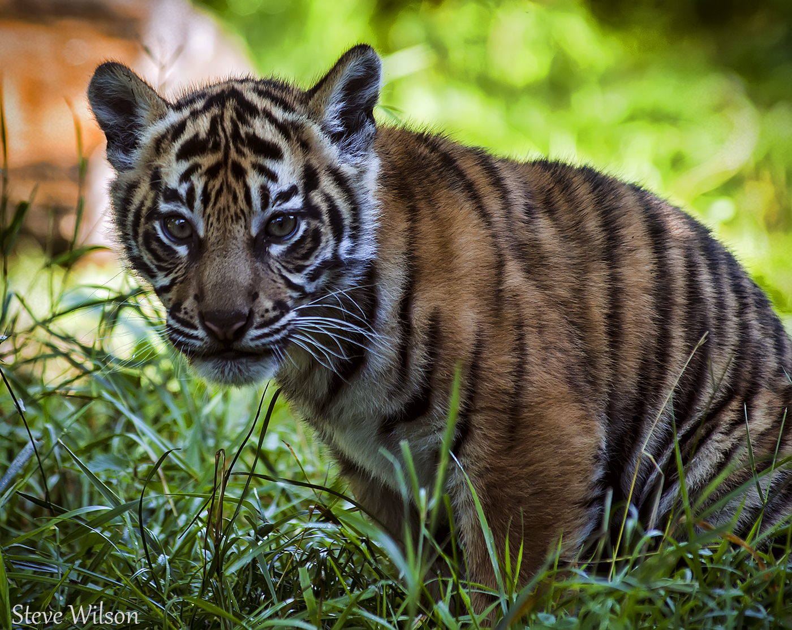
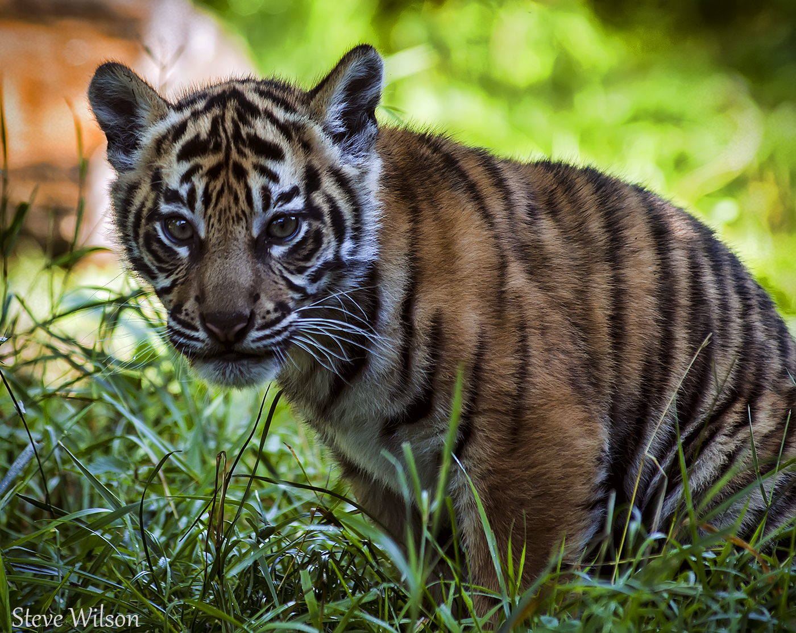

What is a Sumatran Tiger?
Sumatran tigers are a subspecies of tigers. They are actually the smallest surviving tiger subspecies, with a population of as little as 400. Sumatran tigers are roughly the size of big leopards and jaguars. Their habitat ranges from lowland forests to mountain forests and includes evergreen, swamp, and tropical rain forests. These environments are usually found in isolated areas in Sumatra. In the more recent news, two critically endangered but healthy Sumatran tiger cubs were born on November 20, 2017, at the Jacksonville Zoo.
Basic Facts
Average Litter Size: 3 Cubs
Main Predator: Human
Life Span: 18 - 25 years
Main Prey: Wild Boar, Deer, Cattle
Kingdom: Animalia
Colors: Orange, Black, White
Weight: 80kg - 150kg (176lbs - 330lbs)
Size: 2m - 2.4m (6.5 - 7.8ft)
Diet: Carnivore
Conservation
Sumatran tigers are critically endangered because of deforestation and poaching in their home habitat Sumatra. A key contributor to the habitat loss in Sumatra is the fast food restaurant Kentucky Fried Chicken, whose napkins and food containers are made from paper derived from clear-cutting of crucial portions of the Sumatran jungle. Organizations like the Sumatran Tiger Project, which has been active in the area since the 1990s, are trying their best to conserve the small tiger population. National parks and special conservation areas have been set up in a cooperative project involving the Indonesian Forest Ministry and the Australia Zoo. Greenpeace and other organizations are fighting the jungle clearing that is going on to supply KFC and other companies with paper.